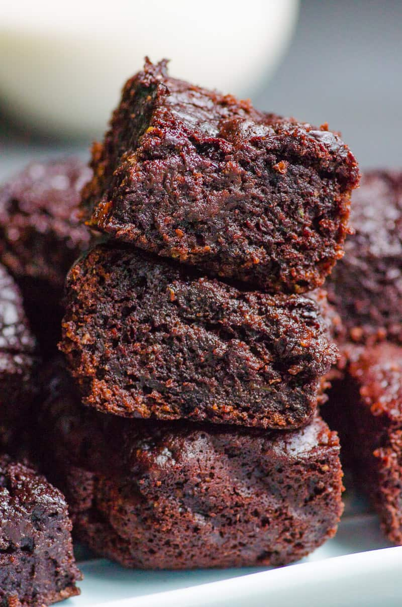

Zucchini brownies

I made you guys something healthy. FINALLY. Zucchini Brownies. Sounds weird, right? Yeah. I hear you. But. Let me just say…these are so incredibly moist and fudgy AND flour-less and healthy! All in one bowl! Hello low carb lovers!
Ingredients
- cup finely shredded zucchini (use the smallest blade on a cheese grater. It should look like a puree).
- 6 tablespoons butter , melted
- 2 tablespoons coconut oil , measured in melted state (or sub with any vegetable oil you have)
- 1 large egg
- 1/2 cup natural granulated sweetener (or granulated sugar of choice -- coconut; white sugar) *See Notes
- 1 tablespoon pure vanilla extract
- 3/4 cup peanut flour
- 1/3 cup unsweetened cocoa powder (or 1/4 cup if you don't like them too rich)
- 1 teaspoon baking powder
- 1/4 teaspoon sea salt
- 4 squares Lindt 90% chocolate (or chocolate of choice), cut into pieces/chunks
Instructions
- Preheat oven to 176°C | 350°F. Line a 8x8" baking pan with baking?parchment paper, or lightly grease with oil spray. Set aside.
- In a medium bowl, whisk together the zucchini, butter, oil, egg, sweetener (or sugar), and vanilla until well combined. Add the peanut flour, cocoa powder, baking powder and salt; folding through slowly until just combined. The batter will be thick but shouldn't be dry. (It depends on how much liquid your zucchini has! If too dry, add 1-2 tablespoons of water). Fold in half of the chocolate chunks; pour batter into prepared pan; sprinkle remaining chocolate chunks over the top.
- Bake for 30 minutes or until the brownies spring back when gently touched. (If testing with a toothpick, they will be very moist in the centre BUT they do set and harden when removed from the oven.)
- Allow to cool completely (about half an hour); cut into squares and chill to semi-set.
- If storing at room temperature they're best eaten within 2 days. If refrigerating, they last 3-4 days.
Return to main page